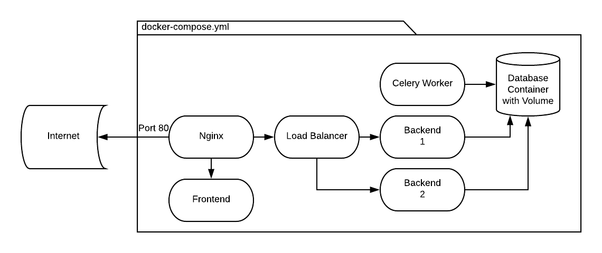
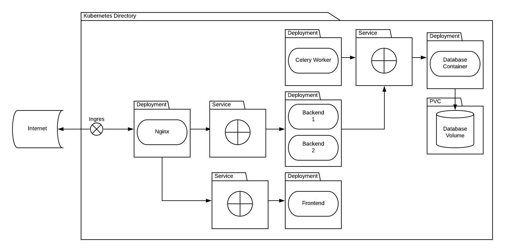

Kubernetes dla użytkownika docker swarm
Created by Dominik "Socek" Długajczyk
Cel prezentacji
- Wprowadzić w odpowiedni "mindset"
- Słowniczek pojęć i narzędzi
- Pokazać najczęstrze problemy
Docker Swarm
Kubernetes
Stwórz POD

Opakuj go w obiekt

Stwórz obiekt volumena

Stwórz obiekt serwisu

Skonfiguruj Ingress

apiVersion: v1
kind: PodIle jest rodzajów obiektów?
Nikt nie wie. :(
Labele
Połącz wszystko ze wszystkim
apiVersion: v1
kind: Service
metadata:
name: MyServiceBackend-asdasdas
labels:
app.kubernetes.io/name: MyServiceBackend-backend
helm.sh/chart: MyServiceChart
app.kubernetes.io/instance: MyServiceBackend-asdasdas-backend
app.kubernetes.io/managed-by: helm
spec:
type: NodePort
selector:
app.kubernetes.io/name: MyServiceBackend-backend
app.kubernetes.io/instance: MyServiceBackend-asdasdas-backend
Co trzeba wiedzieć
Namespace
Grupa konfiguracyjna
Unikalność nazw
Deploy jest asynchroniczny
Czyli puszczasz i czekasz, aż coś zwróci:
"wszystko jest OK"
Szukanie błędów
Szukanie igły w stogu siana
Volumeny
Ilość typów: 27
Najważniejsze
- emptyDir
- persistentVolumeClaim
Konfiguracja clastra
Przed deployem, trzeba skonfigurować claster, np. dodać dane do rejestru
Narzędzia
- Zamiana wartości na zmienne
- Możliwość używania gotowych chartów, np. PostgreSQL-ha
- Łatwiejszy deployment
apiVersion: v1
kind: Service
metadata:
name: MyServiceBackend-asdasdas
labels:
app.kubernetes.io/name: MyServiceBackend-backend
helm.sh/chart: MyServiceChart
app.kubernetes.io/instance: MyServiceBackend-asdasdas-backend
app.kubernetes.io/managed-by: helm
spec:
type: NodePort
selector:
app.kubernetes.io/name: MyServiceBackend-backend
app.kubernetes.io/instance: MyServiceBackend-asdasdas-backend
apiVersion: v1
kind: Service
metadata:
name: {{ include "myname.fullname" . }}
labels:
app.kubernetes.io/name: {{ include "myname.name" . }}-backend
helm.sh/chart: {{ include "myname.chart" . }}
app.kubernetes.io/instance: {{ .Release.Name }}-backend
app.kubernetes.io/managed-by: {{ .Release.Service }}
spec:
type: {{ .Values.service.type }}
ports:
- port: {{ .Values.service.port }}
targetPort: {{ .Values.air.backend.port }}
protocol: TCP
name: http
selector:
app.kubernetes.io/name: {{ include "myname.name" . }}-backend
app.kubernetes.io/instance: {{ .Release.Name }}-backend

telepresence.io

k9s